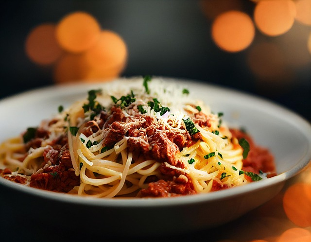

Sauce Bolognese

Fotocredit: pixabay/ Hansuan_Fabregas
An Italian Classic
A hot, savory Sauce Bolognese served over freshly cooked spaghetti: a combination that hits all your taste buds! If you do it right.
Some might think to cook Sauce Bolognese is one of the simplest things. Some tomato sauce, minced meat, spices - what can go wrong? Well, quite a lot!
You don't want a badly cooked sauce on your pasta, believe me! But this recipe for Sauce Bolognese will help you out!
Ready for a level-up? Let's go!
Ingredients
You need the following ingredients to have enough Sauce Bolognese for 4 people:
- 500 g minced meat (preferably beef only)
- 500 g canned tomatoes (look for quality here)
- 2 carrots
- 1 white onion
- 3 garlic cloves
- 2 bay leaves
- 200ml red wine
- 2 tablespoons of olive oil
- Spices: some sugar, salt, pepper
Steps
Here is your roadmap to Sauce Bolognese heaven:
- The first step is the most important one in terms of taste: roast the minced meat in some olive oil until the meat is brown and crispy. Don't rush through this process, take your time. This really makes a difference in the end!
- When the meat is brown and crispy, put it aside. Now start cooking the chopped onion and carrots with some olive oil. After a few minutes, you can add the chopped garlic cloves.
- Add the meat and some sugar. Let everything caramelize for a few minutes. Add some salt and pepper as well as the red wine. Let it simmer for a few minutes.
- Now add the canned tomatoes and bay leaves. Mix everything gently and let it cook for at least 1 hour on low heat. Don't forget to stir every once in a while.
- After 1 hour: add some more spices to your liking.
It's done! You cooked the best Sauce Bolognese, congrats!
Add some freshly cooked spaghetti and some parmesan and you're ready to enter pasta heaven ⁏)
Home